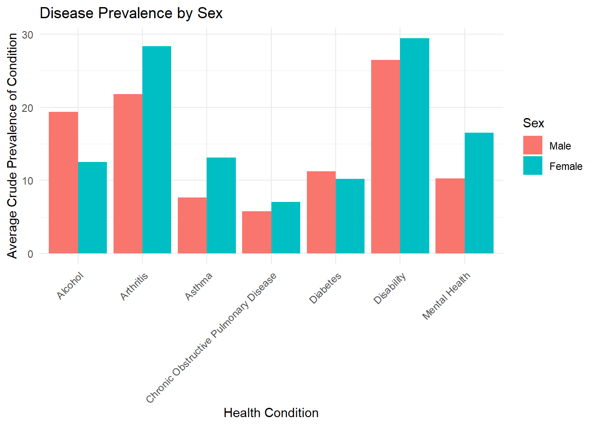

Analysis
Here we provide a detailed analysis using more sophisticated statistics techniques.
Motivation and Research Questions
Motivation
The main purpose of this study is to investigate the disparities in chronic disease prevalence across different racial and ethnic groups in the United States. This project also seeks to examine the relationship between preventive health measures—such as vaccination rates and cancer screenings—and chronic disease outcomes, with a focus on potential gaps in access and utilization. By incorporating data on income levels and insurance coverage, the analysis aims to uncover how socioeconomic factors contribute to these health disparities. Understanding these relationships can help identify the most influential factors affecting chronic disease prevalence and support efforts to improve health equity and outcomes nationwide.
Research Questions
How does chronic disease prevalence vary among different racial and ethnic groups across U.S. states?
What are the patterns of preventive health measure usage (e.g., screenings, vaccinations) among racial and ethnic groups, and how do these relate to disease outcomes?
How do uninsurance rates vary across racial and income groups?
Do income level and uninsurance rates correlate with chronic disease prevalence and preventive health measure usage?
Statistical Analysis
To begin addressing our first research question, we created a bar plot visualizing the average crude prevalence of several chronic health conditions by race and ethnicity. We decided to investigate health disparities across racial and ethnic groups by examining the prevalence of seven specific health outcomes: Alcohol use, Arthritis, Asthma, COPD (Chronic Obstructive Pulmonary Disease), Diabetes, Disability, and Mental Health issues. Each condition was averaged within each racial or ethnic category to allow for clearer comparisons across groups.
The bar chart shown above highlights distinct disparities in chronic disease prevalence. Notably, Multiracial and American Indian/Alaska Native populations consistently exhibit higher rates across multiple conditions, with especially elevated levels for Disability and Arthritis concerns. In contrast, Asian populations generally report lower average prevalence across all conditions analyzed. These patterns suggest that chronic disease burdens are not distributed equally and may reflect underlying structural inequities in healthcare access, environmental exposures, or social determinants of health.
This initial visualization provides a compelling entry point into our analysis. It not only supports the presence of racial and ethnic disparities in chronic disease prevalence, but also sets the stage for more detailed investigation into the socioeconomic and preventive care factors that may be contributing to these outcomes.
To explore our second research question—What are the patterns of preventive health measure usage among racial and ethnic groups, and how do these relate to disease outcomes?—we visualized the average percentage of adults engaging in four key preventive health behaviors, broken down by race and ethnicity.

The graph above illustrates trends across the following categories:
Colorectal cancer screening among adults aged 45–75 years
Influenza vaccination among adults
Counseling for physical activity among adults with arthritis
Routine checkup within the past year among adults
This visualization highlights several important patterns. First, routine checkups maintain relatively high participation across all racial groups, with especially high rates among Black and Multiracial populations. However, when it comes to influenza vaccination, participation is markedly lower overall, with Black, Hispanic, and American Indian/Alaska Native populations showing the lowest averages—suggesting potential barriers to access or vaccine hesitancy in these communities.
The colorectal cancer screening and physical activity counseling among adults with arthritis show a more uneven distribution. The Asian and White populations tend to have higher rates of colorectal screening, while Multiracial and American Indian/Alaska Native groups show moderately lower usage. Counseling for physical activity shows notable dips for Hawaiian/Pacific Islander and Multiracial populations, which may point to inconsistencies in healthcare provider practices or systemic disparities in arthritis care.
Taken together, these disparities in preventive measure usage may help explain some of the patterns seen in chronic disease prevalence. For instance, groups with consistently lower rates of screenings and vaccinations—such as American Indian/Alaska Native and Multiracial populations—also showed higher rates of chronic conditions in our earlier analysis. This reinforces the idea that inequities in preventive care access may contribute to unequal health outcomes.
-> lead into percent insured by race and income level
# A tibble: 1,234,350 × 15
Year LocationDesc Topic Question DataValueType DataValue Race Age Sex
<dbl> <chr> <chr> <chr> <chr> <dbl> <chr> <chr> <chr>
1 2022 Oregon Immuni… Influen… Crude Preval… 31.9 HIS < 65 Both
2 2022 Oregon Immuni… Influen… Crude Preval… 31.9 HIS < 65 Both
3 2022 Oregon Immuni… Influen… Crude Preval… 31.9 HIS < 65 Both
4 2022 Oregon Immuni… Influen… Crude Preval… 31.9 HIS < 65 Both
5 2022 Oregon Immuni… Influen… Crude Preval… 31.9 HIS < 65 Both
6 2022 Oregon Immuni… Influen… Crude Preval… 31.9 HIS < 65 Both
7 2022 Oregon Immuni… Influen… Crude Preval… 31.9 HIS < 65 Male
8 2022 Oregon Immuni… Influen… Crude Preval… 31.9 HIS < 65 Male
9 2022 Oregon Immuni… Influen… Crude Preval… 31.9 HIS < 65 Male
10 2022 Oregon Immuni… Influen… Crude Preval… 31.9 HIS < 65 Male
# ℹ 1,234,340 more rows
# ℹ 6 more variables: Income <chr>, NIPR <chr>, NUI <chr>, NIC <chr>,
# PCTUI <chr>, PCTIC <chr>`summarise()` has grouped output by 'Race'. You can override using the
`.groups` argument.# A tibble: 42 × 4
# Groups: Race [7]
Race Income AvgInsured Count
<chr> <chr> <dbl> <int>
1 ASN All 93.4 17715
2 WHT All 93.1 51645
3 MRC All 90.8 31635
4 ASN 138-400% poverty 90.6 17715
5 WHT 138-400% poverty 90.5 51645
6 HAPI All 90.4 2055
7 BLK All 90.3 38700
8 BLK 138-400% poverty 89.7 38700
9 ASN < 400% poverty 89.4 17715
10 WHT < 400% poverty 89.2 51645
# ℹ 32 more rowsFirst, convert the text type of insurance to numeric type to facilitate subsequent calculations, then group by Race and Income, and calculate the average insurance rate for each group. Finally, use ggplot2 to draw a bar chart comparing the average insurance coverage rate of each ethnic group at different income levels. Based the output result, Across all income brackets, AIAN (American Indian/Alaska Native) and HIS (Hispanic) groups show lower insured rates.WHT (White) and ASN (Asian) groups tend to have the highest insurance coverage, often exceeding 90%.Income Level Correlates Positively with Insurance.As we move from <135% poverty to All, there’s a general upward trend in insurance coverage across all racial groups.This confirms the expected pattern: higher income is associated with better insurance coverage.
Modeling and Inference
Call:
lm(formula = PCTIC ~ Race + Income, data = data)
Residuals:
Min 1Q Median 3Q Max
-31.451 -3.632 0.718 4.082 24.949
Coefficients:
Estimate Std. Error t value Pr(>|t|)
(Intercept) 73.69521 0.02276 3237.42 <2e-16 ***
RaceASN 12.42277 0.02751 451.61 <2e-16 ***
RaceBLK 11.30478 0.02301 491.25 <2e-16 ***
RaceHAPI 9.92183 0.06284 157.90 <2e-16 ***
RaceHIS -3.84406 0.02268 -169.48 <2e-16 ***
RaceMRC 10.67535 0.02392 446.21 <2e-16 ***
RaceWHT 11.94425 0.02194 544.32 <2e-16 ***
Income< 200% poverty 0.51967 0.02080 24.98 <2e-16 ***
Income< 250% poverty 1.16157 0.02080 55.84 <2e-16 ***
Income< 400% poverty 3.42280 0.02080 164.53 <2e-16 ***
Income138-400% poverty 5.03089 0.02080 241.83 <2e-16 ***
IncomeAll 7.25467 0.02080 348.73 <2e-16 ***
---
Signif. codes: 0 '***' 0.001 '**' 0.01 '*' 0.05 '.' 0.1 ' ' 1
Residual standard error: 6.672 on 1234338 degrees of freedom
Multiple R-squared: 0.5308, Adjusted R-squared: 0.5308
F-statistic: 1.269e+05 on 11 and 1234338 DF, p-value: < 2.2e-16Model Performance Metrics:MSE: 44.516 RMSE: 6.672 R-squared: 0.531 This section evaluates the effectiveness of predicting insurance coverage rates (PCTIC) using race and income as predictors through a linear regression model. The purpose of this analysis is to determine how accurately race and income can explain variations in insurance coverage.
First, a linear regression model was fitted with insurance coverage as the dependent variable and both race and income as independent variables. The detailed summary statistics of the regression model provide insights into the strength and significance of these predictors.
To assess model performance, predicted values and residuals were obtained from the model. From these residuals, the Mean Squared Error (MSE), Root Mean Squared Error (RMSE), and R-squared (R²) were calculated. MSE indicates the average squared difference between observed and predicted values, providing an overall measure of prediction error magnitude. RMSE, the square root of MSE, gives a more intuitive measure of the average prediction error. The R-squared value indicates the proportion of the variance in insurance coverage explained by the race and income predictors; a higher R-squared value implies better predictive power.
The calculated performance metrics are as follows: - Mean Squared Error (MSE) - Root Mean Squared Error (RMSE) - R-squared (R²)
These metrics collectively provide a comprehensive evaluation of how well race and income can predict insurance coverage.
Flaws and limitations in analysis
No causality – Cross-sectional data only shows associations, not cause-and-effect.
Simplified model – Linear regression may miss complex relationships; omitted variables could bias results.
Small sample sizes – Some racial/income subgroups have limited data, reducing reliability.
Data merging challenges – Combining datasets with different granularities may introduce errors.（Because merging in difference dataset that might have some data differnece )
Unmeasured factors – Missing variables could influence outcomes.
Aggregation bias – State-level averages may hide local disparities.